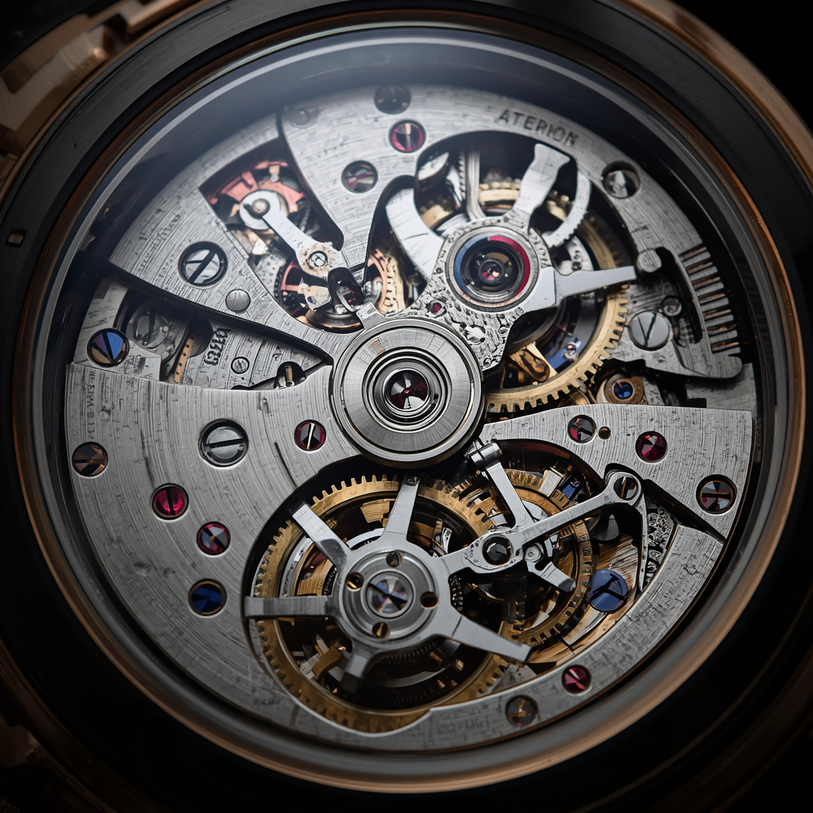

You have heard the terms. Automatic, mechanical, self-winding, calibre. You may have seen a watch with an exhibition caseback and watched the rotor spin without being entirely sure what you were looking at. This guide explains what is actually happening inside a mechanical watch in plain English, starting from the beginning.
The mainspring: stored energy
Everything begins with the mainspring: a long, thin strip of metal, typically around 30cm to 40cm when fully uncoiled, wound tightly inside a cylindrical barrel. When you wind a watch, or when the rotor winds it for you, you are tightening this spring. As it uncoils, it releases energy in a controlled way through the gear train.
The barrel is designed to release energy at a consistent rate even as the spring tension diminishes. This is important: a mainspring under full tension releases more energy than one nearly unwound, and without careful engineering, this would cause the watch to run fast when wound and slow when nearly run down. A good mainspring and barrel design minimises this variation.
The gear train: transmitting energy
From the barrel, energy passes through a series of gears, each rotating faster than the last. The gear train reduces the force of the mainspring to the tiny increments required to move the hands. By the time energy reaches the escapement, it has been divided into precise, tiny pulses.
The escapement: controlling time
The escapement is the heart of the watch. It is the mechanism that converts the continuous rotational energy of the gear train into the tick-tock oscillation that you hear when you hold a mechanical watch to your ear. It consists of the escape wheel and the pallet fork.
The pallet fork alternately locks and releases the escape wheel, allowing it to advance by one tooth at a time. Each advance gives a tiny push to the balance wheel. The balance wheel oscillates back and forth at a fixed frequency, governed by the hairspring coiled around it. This oscillation is the heartbeat of the watch.
The balance wheel is the heartbeat of the watch. Everything else serves to keep it beating consistently.
The balance wheel and hairspring: keeping time
The balance wheel is a weighted wheel that oscillates at a fixed frequency. In most modern movements, this is either 28,800 beats per hour (8 beats per second) or 21,600 beats per hour (6 beats per second). Higher frequencies generally provide more accuracy but wear components faster.
The hairspring, a coil of extremely fine metal attached to the balance wheel staff, provides the restoring force that brings the wheel back to its starting position after each oscillation. The rate of the watch is adjusted by changing the effective length of the hairspring. A longer hairspring oscillates more slowly; a shorter one more quickly.
The rotor: automatic winding
In an automatic movement, a semicircular weight called the rotor is mounted on the back of the movement and rotates freely around the central axis. As your wrist moves during the day, the rotor spins under gravity, and this rotation is converted via a series of gears and a clutch mechanism into winding tension on the mainspring.
The clutch is essential: it ensures the rotor can only wind the spring in one direction regardless of which way it spins, and it disengages when the spring is fully wound to prevent overwinding. A watch worn regularly on an active wrist will typically maintain full wind throughout the day.
Why does any of this matter?
Understanding a movement does not change how a watch looks on your wrist. But it changes how you relate to it. When you feel the weight of the rotor through the case, or see the pallet fork flickering through an exhibition caseback, you are watching engineering that has been refined over three hundred years. That is worth understanding.
If you are ready to own a mechanical watch and would like help choosing the right one, Timepiece Scout will give you three considered recommendations built around your brief.
Ready to find the watch that was made for you?
Get my personal report